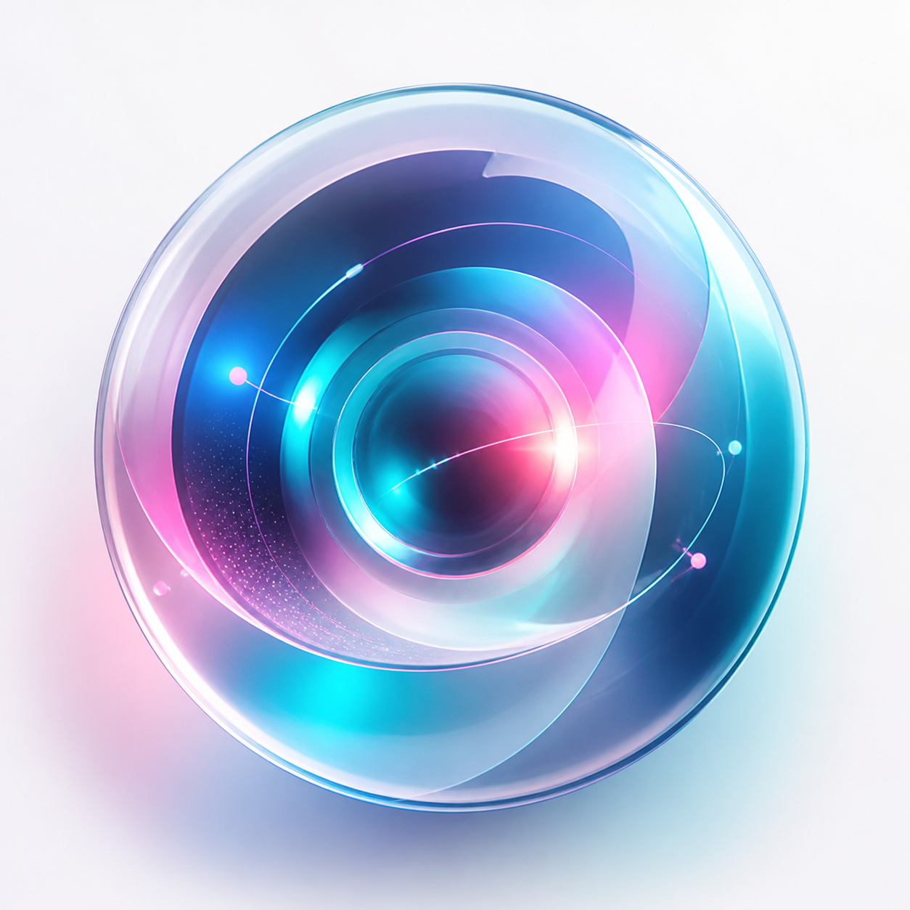

Генерация без переключений
Изображения, видео, музыка, Midjourney и ассистент доступны на сайте и в Telegram. Не нужно держать открытыми десятки сервисов и помнить, где лежит результат.
Веб-студия для быстрых creative loops
Самостоятельный сайт для генерации контента и Telegram-бот работают с одной базой: единый вход через Telegram, общий баланс, история, промпты, лента и рефералы.
Интерактивное демо
Выберите сценарий, а мы покажем путь от первого промпта до результата в истории. На сайте эти же сценарии запускаются через полноценные формы.
Преимущества
Изображения, видео, музыка, Midjourney и ассистент доступны на сайте и в Telegram. Не нужно держать открытыми десятки сервисов и помнить, где лежит результат.
На сайте есть отдельный поток генерации: вход через Telegram, баланс, формы для фото, видео и музыки, история, промпты, лента и партнёрка.
Готовые идеи помогают быстрее стартовать: берите промпт, адаптируйте под задачу и улучшайте результат без долгих экспериментов.
Все важные генерации остаются под рукой. Можно вернуться к изображению, ролику или треку, не прокручивая бесконечный чат.
Приглашайте пользователей и получайте комиссии: 30% с первого уровня, 7% со второго и 3% с третьего. За L1 начисляется бонус +5 кредитов.
Как это работает
Откройте веб-кабинет и подтвердите вход через Telegram Login Widget. Если аккаунт уже был в боте, баланс подтянется автоматически.
Фото, видео, музыка, Midjourney, AI-ассистент, лента или библиотека промптов доступны в web-интерфейсе и боте.
Напишите промпт обычным языком. APIX поможет превратить идею в готовый AI-контент.
Возвращайтесь к истории, улучшайте промпты, делитесь работами и приглашайте друзей.
Отзывы
«Нравится, что можно быстро проверить визуальную идею прямо в Telegram. Сгенерировал, сохранил, пошёл дальше — без лишней возни.»
Марина, SMM-специалист«Библиотека промптов реально экономит время. Особенно когда нужно сделать несколько вариантов для клиента и не начинать каждый раз с пустого листа.»
Илья, дизайнер
«Использую APIX для видео и музыки к коротким промо. Удобно, что история остаётся в одном месте.»
Антон, продюсер контентаГотово к запуску
15 кредитов уже ждут внутри. Начните с простой идеи на сайте или в боте — APIX поможет превратить её в изображение, видео, музыку или точный промпт.